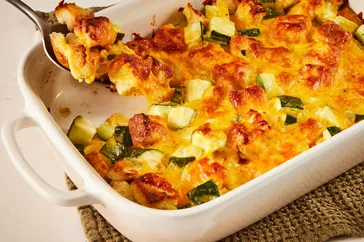

Cheesy Zucchini Casserole
Homepage

Description
This zucchini casserole with bread cubes,onion and cheddar is simple and easy to make
for a deliciously chessy vegetable side dish
Ingredients
- 4 slices bread, Cubed
- 1/4 cup melted butter
- 2 cups of zucchini
- 1 large onion. finely chopped
- 1 large egg, beaten
- 1 tespoon garlic salt to taste
- 2 cups of shredded cheddar cheese
Directions
- Gather all ingredients. Preheat the oven to 350 degrees F
- Place bread cubes in a medium bowl and pour melted butter over the top.
Add zucchini, onion, egg, and garlic salt; mix well.
- Transfer Mixture into a 9x13-insh baking dish and top with cheese
- Cover and bake in the preheated oven for 30minutes.Uncover the dish
and bake for another 30minutes